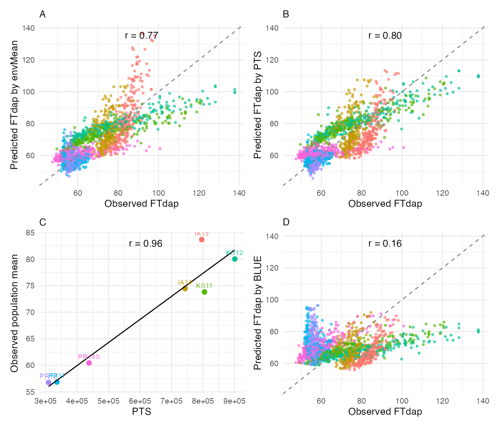
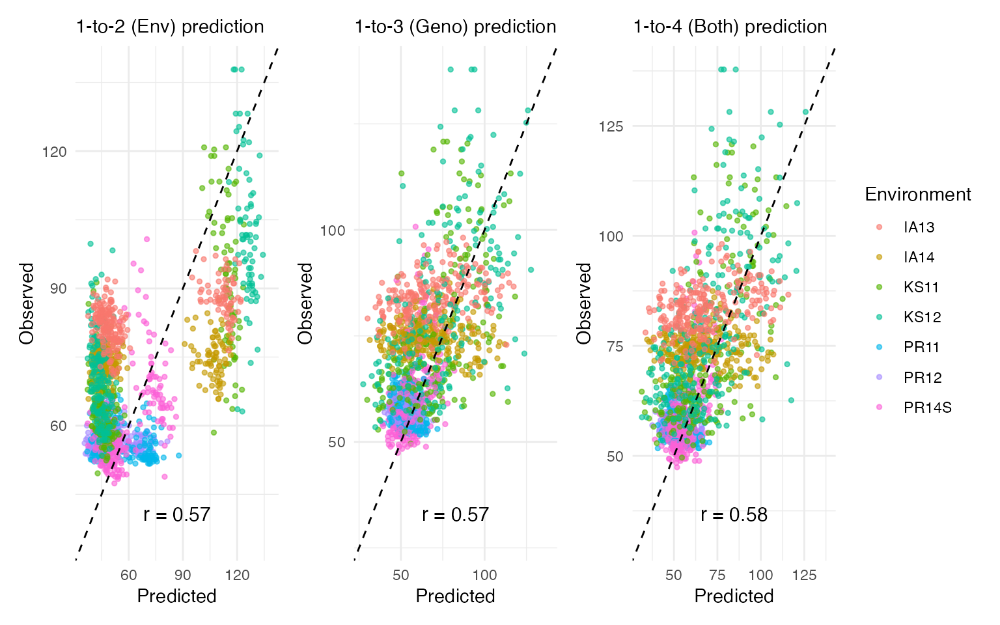

Cross-Validation
cross-validation.RmdOverview
Cross-validation (CV) assesses how well a model predicts unseen data. CERIS provides three CV strategies that differ in what is held out during prediction:
| Function | Scenario | What is dropped | Use case |
|---|---|---|---|
cv_env() |
1-to-2 | One environment at a time | Can we predict trait values in a new environment for known genotypes? |
cv_genotype() |
1-to-3 | Genotypes (K-fold) | Can we predict trait values for new genotypes in known environments? Requires marker data. |
cv_combined() |
1-to-4 | Both environments and genotypes | Can we predict trait values for new genotypes in new environments? |
In addition, loocv() performs line-level leave-one-out
cross-validation, comparing predictions based on the environmental mean
versus the CERIS-derived kPara.
This vignette walks through all four approaches and compares their predictive accuracy.
Data Setup
Load the sorghum dataset and run the full CERIS pipeline to obtain the environmental parameter (kPara):
library(runCERIS)
d <- load_crop_data("sorghum")
exp_trait <- prepare_trait_data(d$traits, "FTdap")
env_mean_trait <- compute_env_means(exp_trait, d$env_meta)Run the CERIS search with max_days = 80 for speed, then
compute window parameters:
ceris_result <- ceris_search(
env_mean_trait = env_mean_trait,
env_params = d$env_params,
params = c("DL", "GDD", "PTT", "PTR", "PTS"),
max_days = 80,
loo = FALSE,
progress = NULL
)
best <- ceris_identify_best(ceris_result, params = c("DL", "GDD", "PTT", "PTR", "PTS"))
best
#> $param_name
#> [1] "PTS"
#>
#> $dap_start
#> [1] 9
#>
#> $dap_end
#> [1] 16
#>
#> $correlation
#> [1] 0.9587
#>
#> $neg_log_p
#> [1] 3.1866
env_mean_trait <- compute_window_params(
env_mean_trait = env_mean_trait,
env_params = d$env_params,
dap_start = best$dap_start,
dap_end = best$dap_end,
params = best$param_name
)Line-Level Leave-One-Out CV
The loocv() function holds out one line at a time within
each environment and predicts its trait value using (a) the
environmental mean and (b) the CERIS-derived kPara regression. This
provides a direct comparison of the two prediction approaches:
loo_result <- loocv(exp_trait, env_mean_trait)
head(loo_result)
#> env_code line_code Prd_trait_mean Prd_trait_kPara Obs_trait Line_mean
#> 1 IA13 E10 109.455 94.242 89.7396 78.37150
#> 2 IA14 E10 89.676 91.970 77.3756 80.43217
#> 3 KS11 E10 84.764 93.348 95.5120 77.40943
#> 4 KS12 E10 90.948 97.146 107.9397 75.33815
#> 5 PR11 E10 65.257 62.074 53.4805 84.41468
#> 6 PR12 E10 65.317 59.643 53.1187 84.47498The result contains observed values (Obs_trait),
predictions from the environmental mean (Prd_trait_mean),
predictions from kPara (Prd_trait_kPara), and the
genotype’s overall mean (Line_mean).
Visualize the prediction accuracy with
plot_prediction_result():
plot_prediction_result(
obs_prd = loo_result,
env_mean_trait = env_mean_trait,
trait = "FTdap",
kpara_name = best$param_name
)
This four-panel plot compares observed versus predicted values under each prediction method, colored by environment. Points closer to the diagonal indicate better prediction. The kPara-based predictions typically show tighter clustering around the diagonal when the CERIS search has identified a strong environmental driver.
Leave-One-Environment-Out CV
The cv_env() function drops one environment at a time
and predicts trait values for genotypes in that environment using the
remaining environments:
cv_env_result <- cv_env(env_mean_trait, exp_trait)
head(cv_env_result)
#> line_code env_code Yprd Yobs Rep
#> 1 E10 PR12 69.260 53.1187 1
#> 2 E100 PR12 60.160 60.0257 1
#> 3 E101 PR12 42.997 56.9559 1
#> 4 E102 PR12 42.998 56.5722 1
#> 5 E103 PR12 48.881 53.8861 1
#> 6 E104 PR12 58.647 56.5722 1Each row contains the predicted value (Yprd), observed
value (Yobs), the held-out environment
(env_code), and a replicate indicator (Rep).
Compute the overall prediction accuracy:
cor(cv_env_result$Yprd, cv_env_result$Yobs)
#> [1] 0.5689695K-Fold Genotype CV
The cv_genotype() function partitions genotypes into K
folds, holds out each fold in turn, and predicts trait values for the
held-out genotypes using genomic marker data. This requires:
- A slope-intercept matrix (
lm_ab_matrix) fromslope_intercept()with kPara-based coefficients. - A genotype marker matrix (
SNPs) filtered to lines present in the trial.
lm_ab <- slope_intercept(exp_trait, env_mean_trait, type = "kPara")
SNPs <- prepare_genotype(d$genotype, unique(exp_trait$line_code))Run the K-fold CV with gFold = 5 and
gIteration = 2 for speed:
cv_geno_result <- cv_genotype(
gFold = 5,
gIteration = 2,
SNPs = SNPs,
lm_ab_matrix = lm_ab,
env_mean_trait = env_mean_trait,
exp_trait = exp_trait,
progress = NULL
)
head(cv_geno_result)
#> line_code env_code Yprd Yobs Rep
#> 1 E102 PR12 55.898 56.5722 1
#> 2 E103 PR12 52.691 53.8861 1
#> 3 E107 PR12 52.999 58.1071 1
#> 4 E108 PR12 46.756 60.0257 1
#> 5 E114 PR12 48.203 54.6536 1
#> 6 E119 PR12 57.469 56.5722 1
cor(cv_geno_result$Yprd, cv_geno_result$Yobs)
#> [1] 0.571371Combined CV
The cv_combined() function simultaneously holds out both
environments and genotypes, providing the most stringent test of
predictive ability:
cv_comb_result <- cv_combined(
gFold = 5,
gIteration = 2,
SNPs = SNPs,
env_mean_trait = env_mean_trait,
exp_trait = exp_trait,
progress = NULL
)
head(cv_comb_result)
#> line_code env_code Yprd Yobs Rep
#> 1 E103 PR12 53.275 53.8861 1
#> 2 E106 PR12 51.051 57.3396 1
#> 3 E116 PR12 61.195 56.1885 1
#> 4 E12 PR12 56.464 56.1885 1
#> 5 E129 PR12 49.973 56.5722 1
#> 6 E13 PR12 63.522 58.8745 1
cor(cv_comb_result$Yprd, cv_comb_result$Yobs)
#> [1] 0.5712037Comparing CV Methods
Use plot_cv_results() to display all three CV methods
side by side. The function takes a list of result data frames and a
vector of labels:
plot_cv_results(
cv_results = list(cv_env_result, cv_geno_result, cv_comb_result),
labels = c("1-to-2 (Env)", "1-to-3 (Geno)", "1-to-4 (Both)")
)
Each panel shows observed versus predicted values for one CV method,
with points colored by environment and the correlation coefficient
displayed. Typically, cv_env (dropping environments) yields
the highest accuracy because it retains all genotype information, while
cv_combined (dropping both) is the most challenging
scenario.
Summary
| CV Method | What is predicted | Marker data needed | Typical accuracy |
|---|---|---|---|
loocv() |
One line at a time within each environment | No | Baseline comparison |
cv_env() |
Known genotypes in a new environment | No | Highest |
cv_genotype() |
New genotypes in known environments | Yes | Moderate |
cv_combined() |
New genotypes in new environments | Yes | Lowest |
The gap between cv_env and cv_combined
reflects how much predictive power comes from knowing the genotype
versus knowing the environment. When the gap is small, the CERIS-derived
environmental parameter captures most of the GxE variation, making
environmental characterization the dominant source of prediction
accuracy.